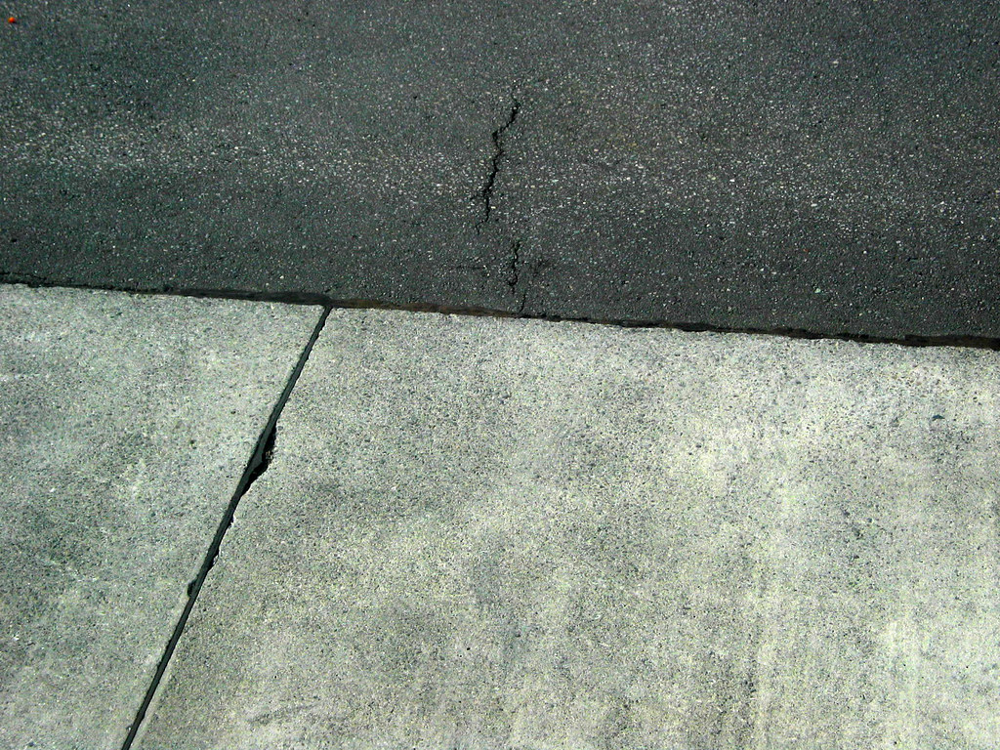

Foundation Crack Repair in Des Moines, IA
Foundation crack repair means sealing or bonding a crack in a foundation wall, most often by injecting epoxy or polyurethane resin through the full thickness of the concrete, and it is the right fix when the wall itself is sound but one crack is leaking, or when a stable crack needs its strength restored. It is one of the smallest and cheapest jobs in foundation work, and one of the most mis-sold in both directions.
In Des Moines, the details are local: homes here sit on Clarion soil over glacial clay soils and freeze-thaw cycles, and 70.2% of the housing stock predates 1980. This page combines the full foundation crack repair guide with Des Moines's measured soil, rainfall and housing data, so you can judge any quote against both.
Request a free inspection
Des Moines by the numbers: soil, rainfall and housing age
Generic foundation advice ignores the three things that decide how foundations actually behave here: the soil series under the house, the local rain and frost pattern, and how old the housing stock is. These are Des Moines's measured numbers, from public data — not estimates:
| Dominant soil series | Clarion (Clarion-Urban land complex, 2 to 5 percent slopes) |
| Clay in the topsoil | 21% |
| Shrink–swell (LEP) | 1.3% — low |
| Seasonal water table | About 4 feet down in the wettest season |
| Average rainfall | 37.6 inches a year |
| Days below freezing | about 119 a year |
| Homes built before 1980 | 70.2% of housing |
| Homes built before 1960 | 48.4% of housing |
| Population | 214,133 |
| Elevation | about 810 feet |
The ground under most Des Moines homes is Clarion soil. Its topsoil runs 21% clay, and its most active layer has a linear extensibility of 1.3% — a low shrink–swell rating on the USDA scale. Movement here is driven less by swelling clay than by moisture change, frost and settlement — which is why drainage and consistent soil moisture matter so much. The seasonal high water table sits about 4 feet down in the wettest season, so basements and crawl spaces also fight groundwater, not just surface rain.
Housing age stacks the risk. 70.2% of Des Moines's homes were built before 1980 and 48.4% before 1960 — footings poured to older standards, with decades of soil cycles behind them. The city averages 37.6 inches of rain a year, peaking in May, and about 119 days below freezing — the wet–dry and freeze–thaw swings that test those older footings hardest.
Data: USDA Soil Survey (SSURGO) via Soil Data Access, sampled at a residential point in Des Moines; Open-Meteo archive (ERA5) 2015–2024; US Census Bureau ACS 2023 5-year via Census Reporter; USGS Earthquake Catalog; population via Wikidata. Retrieved November 2026.
Watch: Des Moines's rainfall, soil and housing-age data in 11 seconds — animated from the same sources listed above.
Which cracks matter: hairline shrinkage vs structural cracks
Under Des Moines, the sampled soil is Clarion — 21% topsoil clay with a low shrink–swell rating (LEP 1.3%). Concrete cracks as it cures. A poured wall shrinks slightly in its first year or two and hairline cracks, usually vertical, under 1/16 inch wide, with both sides level, are the ordinary result. They look alarming in a photo and mean almost nothing structurally, though they can leak, because even a hairline runs the full thickness of the wall. Most foundation cracks a homeowner will ever see are this kind, and the repair question for them is about water, not strength.
Structural cracks tell a different story, and they advertise themselves by pattern rather than size. Diagonal cracks running from corners of windows or the top of the wall, stair-step cracks marching through block joints, horizontal cracks anywhere, and any crack that is offset, so one side sits proud of the other, all indicate the foundation is moving, not shrinking. So does a crack that grows: mark the ends with pencil, date the marks, and a crack that passes its own marks over a season is active. The table below is the quick sort. If your crack lands in the last three rows, injection alone is not the conversation; the wall cracks page goes deeper on diagnosis.
Block walls behave differently from poured walls, and the distinction matters for repair. A block wall is hollow-cored masonry units and mortar, so injecting a crack the way you would a poured wall does not work the same way; block cracks are usually diagnosed as a movement record first, and the fix is aimed at the cause, with joints repointed or the wall reinforced. Most of this page, and all injection discussion, concerns poured concrete walls unless it says otherwise.
| Crack type | Likely cause | Serious? | Typical fix |
|---|---|---|---|
| Hairline vertical, under 1/16 in, sides level | Concrete shrinkage while curing | No, cosmetic; may leak | Monitor, or inject/seal if it leaks |
| Vertical, wider, sides still level | Minor settlement or shrinkage, finished moving | Usually not | Epoxy injection to restore the wall section |
| Diagonal or stair-step through blocks | Differential settlement: one part of the foundation dropping | Yes, get it measured | Diagnose movement first; piers if settlement is active |
| Horizontal, anywhere in the wall | Soil pressure pushing the wall inward | Yes, structural | Reinforcement (straps or anchors), not injection alone |
| Wide over 1/4 in, offset, or growing | Active movement of the foundation | Yes, promptly | Full inspection; injection only after movement is addressed |
Can I ignore hairline cracks in my foundation?
Usually, yes, provided it is genuinely a hairline: under about 1/16 inch wide, vertical, with both sides at the same height and no change over time. Mark the ends, date the marks, and check it a few times a year. The one thing a hairline can still do is leak, so if water comes through it, sealing it is worthwhile even though the crack itself is harmless.
Epoxy vs polyurethane injection
70.2% of Des Moines homes were built before 1980, so most foundation crack repair work here happens on older footings. Both methods inject resin through ports stuck along the crack, filling it from the inside face through the full wall thickness. What differs is the resin's job. Epoxy cures hard and bonds the two sides of the crack together with strength comparable to the concrete itself, which makes it the choice when the crack should be structurally stitched back into one piece. Its weakness is water: epoxy needs a reasonably dry crack to bond well, and it is rigid, so it has no give if the wall moves again.
Polyurethane foam injection works the opposite way. The resin reacts with the water inside a leaking crack, expands, and forms a flexible, closed-cell seal that stops the water. It bonds less strongly and restores no real strength, but it tolerates wet, actively leaking cracks where epoxy would fail, and its flexibility forgives slight seasonal movement. Many professionals carry both and choose per crack: epoxy for the dry structural crack, polyurethane for the wet leaking one, sometimes one after the other in the same wall.
| Epoxy injection | Polyurethane foam injection | |
|---|---|---|
| Primary job | Bonds the crack back together, restoring strength | Stops water by sealing the crack |
| Behaviour with water | Needs a fairly dry crack to bond | Reacts with water; made for leaking cracks |
| Flexibility after curing | Rigid; can re-crack if the wall moves | Flexible; tolerates slight seasonal movement |
| Best for | Dry structural or settlement cracks that have stopped moving | Actively leaking cracks of any cause |
| Professional cost | Within the published $500-$2,500 per-crack range | Same range; simple leaks often at the lower end |
Should I use epoxy or polyurethane for foundation cracks?
Use epoxy when the crack is dry and you want the wall section bonded back to full strength, for example a settlement crack that has finished moving. Use polyurethane foam when the crack is leaking or damp, since it reacts with water, expands to fill the crack, and stays flexible. Many pros decide on the day, based on whether the crack is wet. Neither fixes a wall still moving.
How much does it cost to fix a crack in a foundation?
Professional injection costs $500-$2,500 per crack in published ranges, with most single, accessible wall cracks landing in the lower half of that span. The price depends on crack length, wall thickness, whether the crack is leaking, and access: a crack hidden behind a finished wall or a water heater costs more to reach. Get the per-crack price in writing before work starts, not a day rate.
The honest DIY answer: kits vs professionals
Des Moines averages 37.6 inches of rain a year — moisture management is part of any lasting fix. Search results for this repair are full of kit tutorials, and the kits are real: low-pressure injection kits with ports, cartridges and resin sell for $75-$225 and genuinely can seal a leaking hairline or narrow crack in a poured wall. If your crack is non-structural, your wall is unfinished so you can watch the whole crack, and you are patient about surface preparation, a kit is a legitimate job. A mason commenting on one DIY repair put it the way tradespeople do: improvised backer material in a surface crack is not a bad idea for a cosmetic fill, as long as everyone understands it is cosmetic. Surface patching with caulk, backer rod or hydraulic cement is exactly that: it covers the top of the crack without filling its depth, and water usually finds its way back within a season or two.
What a kit cannot do is the rest of the list. It cannot restore structural strength the way a properly bonded epoxy injection can, because home kits run at low pressure and rarely fill the full wall thickness on longer cracks. It cannot tell you whether your crack is structural; the kit assumes you already know. It cannot come with a warranty, and it cannot stop a crack whose cause, a moving footing or soil pressure on the wall, is still at work. The $500-$2,500 professional price buys full-depth fill, the right resin for the conditions, and someone accountable if it leaks again. That is the honest trade, and for a single leaking hairline, the kit often wins it fairly.
Can I repair a foundation crack myself?
Yes, for the right crack: non-structural, in an exposed poured wall, leaking or not. Kits cost $75-$225 and work when you follow the preparation steps exactly. Do not DIY a crack that is wide, offset, horizontal or growing, or any crack as a substitute for finding out why it appeared. If the crack comes back, that is your answer: it needs professional diagnosis.
Why did my crack come back after I sealed it?
Because the crack was a symptom, and sealing a symptom does not stop its cause. Injection fills the crack that exists today; if the footing is still settling or soil pressure is still pushing the wall, the wall moves again and the repair splits, or a new crack opens beside it. Fix order matters: stop the movement first, then seal.
Carbon fiber straps, and the limits of injection
Under Des Moines, the sampled soil is Clarion — 21% topsoil clay with a low shrink–swell rating (LEP 1.3%). Some cracks are the wall's way of reporting that it is bending. A long horizontal crack, or a vertical crack in a wall that has started to bow inward, means soil pressure is flexing the wall, and sealing that crack does nothing about the force. Carbon fiber straps answer the force. A strap is a strip of carbon fiber fabric, far stronger than steel by weight, bonded to the inside face of the wall with epoxy, running from the floor framing down into the footing area. Once cured, the strap holds the wall against further inward movement and typically needs no excavation, no exterior digging and no maintenance.
Straps have honest limits, and a page that sells them as magic is not helping you. They stop a wall from bowing further; they do not straighten a wall that has already moved a long way, and badly displaced walls need anchors or partial rebuilding instead. They also do not seal cracks against water, which is why strap jobs are often paired with injection of the cracks themselves. The comparison is not straps versus injection as rivals. Injection treats the crack. Straps treat the wall. Houses with bowing walls frequently need both, quoted as separate lines.
Expect the straps themselves to be unglamorous: dark bands, about five to six inches wide, spaced along the wall at intervals an engineer or experienced installer sets from the bow measurement. They sit flat, can be painted over, and interfere with nothing except shelving plans. What you are buying is not the fabric, which is cheap, but the judgement about whether your wall's movement pattern suits straps at all, and the surface preparation that decides whether the bond holds for decades.
Is epoxy injection a permanent fix for foundation cracks?
Only if the wall has stopped moving. Epoxy bonds a crack back to full strength, and on a stable wall that repair is effectively permanent. On a wall still being pushed or a footing still settling, the rigid epoxy cannot flex, so the wall either splits the repair or cracks alongside it. Permanence is a property of the diagnosis, not the glue: stabilise first, then inject, and the fix lasts.
When does a crack need carbon fiber straps instead of injection?
Choose straps when the wall itself is the problem: a horizontal crack, measurable inward bow, or cracks returning after injection. Choose injection when the wall is straight and plumb and the crack is the whole problem. A string line or level along the wall shows bow in minutes. Reinforcement without need is overselling; injection into a moving wall is underselling. Both mistakes cost you a second job.
When a crack is NOT just a crack
70.2% of Des Moines homes were built before 1980, so most foundation crack repair work here happens on older footings. Read the list below before booking anyone. These are the patterns where a crack is a messenger from a larger problem, settlement, soil pressure or a failing wall, and sealing the messenger changes nothing. In those cases the crack repair page you want first is our foundation wall cracks page, which walks through diagnosis by pattern, and the fix may be piers, straps or anchors, with injection as the finishing step rather than the main event. When you request quotes for any of these patterns, ask the inspector to show you the measurement behind the recommendation, in numbers, on paper. A bow can be measured in fractions of an inch, settlement in floor elevations, a crack in width at three points. Companies that measure will show you. Companies that gesture at the wall and quote a package price are selling, and the crack is the least of what they are selling.
One more question arrives with almost every crack photo: will insurance pay for this? Almost never, and the reasoning is consistent. Homeowners policies cover sudden, accidental damage and exclude settlement, soil movement, earth pressure and wear over time, which between them describe nearly every foundation crack ever photographed. The exception is a crack caused by a covered sudden event, such as a burst pipe undermining the wall, where the resulting damage may be covered even though the pipe is not. A contractor who promises insurance will pay for ordinary crack repair is telling you something about the contractor.
- A horizontal crack anywhere in the wall
- Any crack wider than 1/4 inch, or offset so one side sits higher
- A crack that has grown past pencil marks you dated
- Cracks paired with sticking doors, sloping floors or gaps at ceilings
- Stair-step cracks in brick or block above the wall crack
- Water arriving with soil or sediment, not clear water
- A wall you can see is no longer straight or plumb
Does homeowners insurance cover foundation crack repair?
Almost always no. Standard homeowners policies exclude settlement, soil movement, earth pressure and gradual deterioration, which covers the usual causes of foundation cracks. The exception is damage from a sudden covered event, such as a burst pipe washing out support under a wall, where the resulting damage may be covered. Read your policy's earth movement exclusion before counting on help, and be wary of any contractor who guarantees coverage.
How long does foundation crack injection take?
A typical single crack takes two to four hours, including setting ports, injecting and cleaning up, and the resin cures within about a day. Multiple cracks in one visit add roughly an hour each rather than doubling the job, since the setup is shared. You can use the basement normally the same evening. If the wall is finished, allow extra time for opening and patching drywall around the work area.
What foundation repair costs in Des Moines
Des Moines repairs fall into fairly predictable ranges. The figures below are published market ranges — not quotes, and not prices from any specific company. Your cost depends on how much of the foundation has moved and the piers it needs.
| Repair | Typical range | Notes |
|---|---|---|
| Steel or helical piers (per pier, installed) | $1,000 – $2,500 | Published national guides put piers at $1,000–$3,000 each; most homes need 6–14, driven or screwed to stable strata below the problem soil. |
| Average structural repair (whole job) | $4,000 – $12,000 | The typical total for a residential piering job, depending on pier count, access, and how much lift is attempted. |
| Slabjacking / mudjacking (per section) | $500 – $1,500 | Raises a settled slab section by pumping material beneath it. Best for porches, walks, and mild settlement. |
| Polyurethane foam lifting (per section) | $1,000 – $2,500 | Foam injected under a slab expands and lifts it. Faster and cleaner than mudjacking, at a higher price. |
| Interior drainage system + sump pump | $2,000 – $6,000 | Controls groundwater under the floor; often paired with structural work where the water table is high. |
| Foundation crack injection (per crack) | $500 – $2,500 | Epoxy or polyurethane injection seals a leaking or cracked wall section. DIY kits run $75–$225 but cannot restore strength. |
| Exterior grading & drainage correction | $500 – $2,500 | Regrading soil and extending downspouts so water stops collecting at the footing. |
Basement homes dominate in Des Moines, so interior drainage and wall stabilization are common add-ons, and pier counts tend to run higher on older two-story homes.
Be wary of phone prices given without measurements — a proper quote follows an inspection and is itemised, so you can compare offers line by line. Our national cost guide shows how to check any quote against these ranges.
Foundation Crack Repair in Des Moines: local questions
What soil conditions affect foundation crack repair in Des Moines?
Des Moines homes sit mostly on Clarion soil, with 21% clay in the topsoil and a shrink–swell rating of 1.3% (low). Crews plan depth and spacing around that soil behaviour, because a fix that ignores how the local ground moves with moisture will not hold. Ask any contractor bidding on your home to explain, in writing, how their plan accounts for this soil — a good one answers without hesitating.
Are older Des Moines homes more likely to need foundation crack repair?
Yes — 70.2% of Des Moines's housing was built before 1980 and 48.4% before 1960. Those homes have older footing designs and fifty-plus years of soil movement behind them, so they make up most serious repair work. Age alone is not a diagnosis, though: what matters is measured movement, so an older home with stable readings may need nothing at all.
How does Des Moines's rainfall affect foundation crack repair?
Des Moines averages 37.6 inches of rain a year, peaking in May. Wet months swell the soil and load walls with water pressure; dry months shrink it away from footings. That cycle is why timing and drainage are part of any durable repair plan here — fixing the structure without managing the water that moves the soil usually means the problem comes back.
Frequently asked questions
Do the injection ports stay on the wall forever after the repair?
No. The black plastic ports you see in injection videos are surface-mounted for the job and are knocked off or ground flush once the resin has cured, leaving small patched spots where each port sat. The crack line itself usually gets a surface seal that can be sanded and painted. What remains visible is a thin repaired line, not the hardware. Ask to see a finished wall before you sign.
Is repairing a crack in a slab floor the same as a wall crack?
Wall cracks get injected because the material can fill the full thickness of the wall and bond it. Slab floor cracks are treated differently: usually routed and sealed at the surface, or ground out and filled, because the issue is normally water vapour or insects rather than strength. A slab crack with one side sitting higher than the other is a settlement sign, not a sealing job.
Can foundation cracks be repaired in winter?
Yes, injection is done year-round. Polyurethane reacts with moisture and cures in cold, wet cracks without trouble, and epoxy work may use formulations rated for lower temperatures. The bigger seasonal factor is diagnosis, not installation: a crack inspected during a wet season shows you whether it leaks, while a dry-season visit shows you its width at rest. Either is workable; tell the inspector which behaviour worries you.
Does a repaired foundation crack have to be disclosed when selling?
Disclose what you know, with paperwork. A professionally repaired crack, documented with the invoice, the method used and any warranty, is generally a neutral or positive fact: it shows the problem was found and fixed properly. An undocumented patch invites a buyer's inspector to assume the worst. Unrepaired structural cracks must be disclosed in most states. Keep the repair records with your house documents either way.
Should I seal a crack that is not leaking?
Yes, if the crack is dry, stable and hairline width. Sealing it against insects, soil gas and future water is cheap insurance, and injection also documents that the crack was measured and judged non-structural. What sealing cannot do is turn a moving crack into a fixed one. If there is doubt about movement, measure and monitor first. A sealed crack that reopens is data, not disaster.
How can I tell a normal slab shrinkage crack from a problem?
Hairline shrinkage cracks appear as concrete cures and are normal in a slab's first years: typically under 1/16 inch wide, wandering or hairline-straight, with both sides at the same level. A crack worth professional eyes is over 1/4 inch, offset so one side sits higher, running corner to corner, or paired with sloping floors or sticking doors. Width, offset and the company it keeps are the three tells.
Related guides
Request a free foundation inspection
Tell us where you are and what you are seeing — a local specialist will call you back to schedule it.
Prefer to talk first? [Call-tracking phone number to be added before launch]